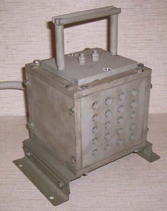
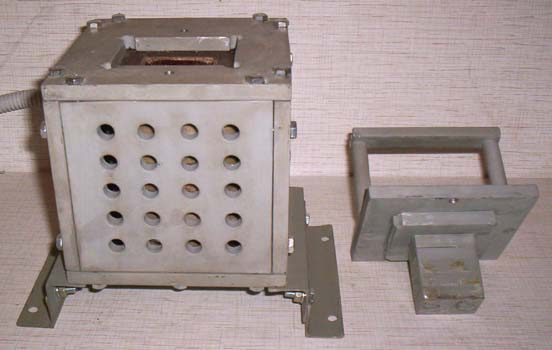
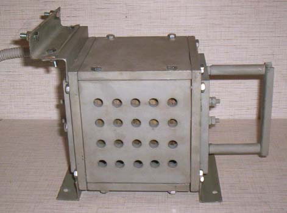
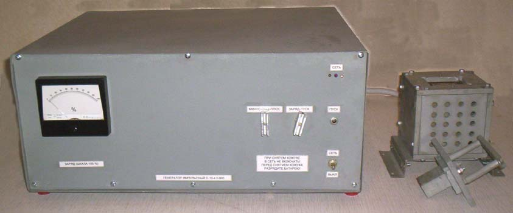

Магнитный индуктор для
импульсного намагничивания и размагничивания
редкоземельных постоянных магнитов объемом до 45 х 30 х 60 куб. мм

Назначение
Индуктор предназначен для работы в составе установок
импульсного намагничивания (размагничивания) [4] в
комплекте с емкостным накопителем энергии 4 кДж 900 В [1]. Он позволяет
производить одноосное намагничивание до насыщения и частичное размагничивание
обратным полем постоянных магнитов на основе редкоземельных металлов
(неодим-железо-бор, самарий-кобальт) - спеченных или магнитопластов
[2], а также постоянных магнитов любых других
составов с меньшими значениями коэрцитивной силы.
Технические данные:
- размеры зоны намагничивания: площадь 45 х 30 мм2,
высота - до 60 мм (за счет стальных вставок может изменяться от 20 мм до 60
мм с шагом 10 мм)
- направление намагничивания - по высоте
- амплитуда магнитной индукции в зоне намагничивания не
менее 3 Тл при амплитуде импульса тока не более 1200 А
- неоднородность магнитного поля в зоне намагничивания не
более 10 %
- длительность импульса тока не более 30 мс
- форма
импульса тока произвольная (обычно синусоидальная, колоколообразная или с
экспоненциальным нарастанием и спадом)
- готовность к работе - сразу после включения
- производительность - до 60 циклов намагничивания или до
30 циклов размагничивания в час
- средняя потребляемая мощность при прохождении импульсов
тока амплитудой 1200 А и частотой 1 импульса в минуту не превышает 200 Вт
- охлаждение естественное воздушное
- габаритные размеры не более 160 х 230 х 270 мм3
- масса не более 15 кг
Конструкция
Индуктор
представляет собой размещенный в стальном корпусе соленоид со сквозным
отверстием – зоной намагничивания. Соленоид зажат между верхней и нижней
стальными крышками, которые крепятся к боковым стенкам корпуса. Передняя стенка
корпуса имеет вентиляционные отверстия для естественного воздушного охлаждения
соленоида. Выводы соленоида подключены к кабелю, который выходит через отверстие
на задней стенке корпуса. Там же, на задней стенке корпуса имеется клемма
заземления. В проходное отверстие соленоида индуктора с двух сторон вставляются
стальные полюсные наконечники, которые повышают величину и однородность
магнитного поля в зоне намагничивания. Индуктор может располагаться и
закрепляться на рабочей поверхности в различных положениях с использованием
крепежных уголков, переставляемых соответствующим образом (рис. 1).


Рис. 1. Индуктор в различных положениях на рабочей
поверхности.
Применение
Постоянный магнит помещается в зону намагничивания и
закрывается верхней крышкой со съемной ручкой. Для удобства работы можно
использовать немагнитный токонепроводящий контейнер. Конструкция контейнера
определяется конструкцией и размерами намагничиваемого магнита и должна
обеспечивать его фиксацию в нужном положении. На рис. 2 показан внешний вид
установки импульсного намагничивания (размагничивания) в комплекте с емкостным
накопителем энергии.

Рис. 2. Установка намагничивания и частичного размагничивания
в комплекте с емкостным накопителем энергии 4 кДж 900
В [1].
При намагничивании в индукторе с помощью емкостного накопителя
генерируется импульсное магнитное поле с заданной полярностью. Для
размагничивания можно использовать либо импульсное магнитное поле обратной
полярности, либо серию магнитных импульсов с чередующейся полярностью и
уменьшающихся по амплитуде. Контролировать амплитуду магнитной индукции в зоне
намагничивания индуктора, а также качество намагничивания и размагничивания
постоянных магнитов можно с помощью тесламетров [3].
Ссылки:
- Генератор мощных импульсов
тока (емкостной накопитель энергии)
- Изготовление и
применение магнитопластов (магнитоэластов)
- Приборы для
измерения магнитных полей
- Установки
импульсного намагничивания и размагничивания постоянных магнитов
Словарь
терминов:
- Импульсный генератор - генератор
импульсов напряжения или тока.
- Индуктор - генератор индукции.
- Коэрцитивная сила по магнитной индукции
- напряженность размагничивающего поля, которое должно быть приложено к
предварительно намагниченному образцу, чтобы магнитная индукция в нем стала
равна нулю.
- Коэрцитивная сила по намагниченности -
напряженность размагничивающего поля, которое должно быть приложено к
предварительно намагниченному образцу, чтобы его намагниченность стала равна
нулю.
- Магнитная индукция - вектор, численно
равный пределу отношения силы, действующей со стороны магнитного поля на
элемент проводника с электрическим током, к произведению тока и длины
элемента проводника, если длина этого элемента стремится к нулю, а элемент
так расположен в поле, что этот предел имеет наибольшее значение, и
направленный перпендикулярно к направлению элемента проводника и к
направлению силы, действующей на этот элемент со стороны магнитного поля,
причем из его конца вращение по кратчайшему расстоянию от направления силы к
направлению тока в элементе проводника должно быть видно происходящим против
часовой стрелки.
- Магнитопласт - полимерный постоянный
магнит, изготовленный на основе смеси магнитотвердого порошка и связующего
полимера.
- Намагничивание - воздействие на образец
магнитным полем, вследствие которого у образца появляется отличная от нуля
остаточная намагниченность.
- Неодим-железо-бор (англ. Ne-Fe-B) -
магнитотвердый материал на основе соединения железа, неодима и бора состава
Nd2Fe14B, Nd3Fe16B, Nd4Fe28B3.
- Постоянный магнит - объект, создающий
магнитное поле за счет собственных внутренних элементарных электрических
токов, текущих без использования внешнего источника энергии в составляющем
объект материале
- Размагничивание - процедура, позволяющая
уменьшить остаточную намагниченность образца до таких значений, когда ею
можно пренебречь.
- Самарий-кобальт (англ. Sm-Co) -
магнитотвердый материал на основе интерметаллического соединения самария и
кобальта состава SmCo5. В обозначении марки (например, КС37)
буквы обозначают состав (К - кобальт, С - самарий), а число (37) -
процентное содержание самария.
19. 11.2014
09.03.2018
Альтернативные источники
энергии
Компьютеры и
Интернет
Магнитные поля
Механотронные системы
Перспективные
разработки
Электроника и
технология
Главная страница